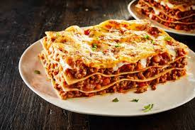

Lasagna

Mijn eigen lasagne
Een heerlijke lasagna met verse lasagna bladen, verse bladspinazie, rundergehakt,
zelf samengestelde tomatensaus, verse kruiden, bechamelsaus en nog veel meer lekkers.
Ingrediënten
- 2 zakken geraspte kaas
- 2 Uien
- 500gr Rundergehakt
- Groot blik tomatenpuree
- 1 Prei
- Doosje champignons
- 1 Rode paprika
- 1 Groene paprika
- 2 a 3 Teentjes knoflook
- 2 Grote zakken spinazie
- 500ml Volle melk
- 50gr bloem
- Italiaanse kruiden
- Heinz frito
- Zout
- Peper
- Kerrie
- Paprikapoeder
Bereidingswijze
- Begin met het snijden van de uien, paprika's prei(goed wassen), champignons en Italiaanse kruiden
- Daarna begint u met het rullen van het gehakt
- Wanneer het gehakt bijna klaar is gooit u alle Groentes erbij en bakt dit voor ongeveer 5 min mee.
- Daarna gooit u alle kruiden en en het blikje tomatenpuree erbij en laat dit nog ongeveer 5 min sudderen op laag vuur
- Daarna gooit u het hele pakje frito erbij en laat het geheel ongeveer 20/25 min sudderen op laag vuur
- Nu begint u de 50gr boter te smelten (in een nieuwe pan) op laag vuur, zodra de boter gesmolten is voegt u de bloem toe en al roerend ongeveer 3-5 min bakken
- Nu giet u rustig beetje bij beetje de melk toe en blijft roeren tot het ongeveer vla dikte heeft bereikt dan direct van het vuur af
- Dan bakt u snel de spinazie en begint alvast de eerste laag gehakt/saus neer te leggen in de schaal en verwarmd de oven voor op 180c
- Daarna 1 laag lasagna bladen boven op de 1e laag daar weer spinazie bovenop met de bechamelsaus(melk saus), dan weer een laag gehakt, lasagna blad, spinazie,
- Dan als laatste laag doet u eerst een laag bechamelsaus en daaroverheen de kaas
- 20-25 min in de oven en eet smakelijk
Meer recepten